Stiftelse er en juridisk selvstendig organisasjonsform som etableres for å fremme bestemte formål av allmennyttig, vitenskapelig, kulturell eller veldedig karakter. I regnskapssammenheng utgjør stiftelser en særegen kategori med spesifikke regler for regnskapsføring, eiendelsstyring og økonomisk rapportering. For norske stiftelser gjelder særlige bestemmelser som påvirker hvordan egenkapital forvaltes, skatter håndteres og kontroll utøves.
Seksjon 1: Stiftelsens Juridiske Grunnlag
1.1 Definisjon og Karakteristika
Stiftelse er en juridisk person uten eiere, opprettet ved at en eller flere stiftere overfører eiendeler til et selveiende fond med et spesifikt formål.
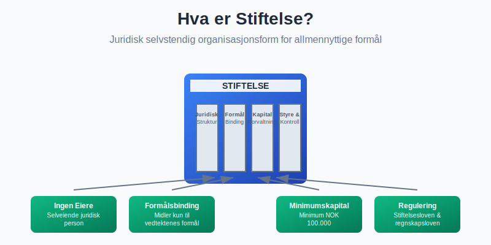
Kjennetegn ved Stiftelser
- Juridisk selvstendighet: Egen rettssubjektivitet adskilt fra stifterne
- Formålsbinding: Virksomheten må være i tråd med vedtektenes formål
- Ingen eiere: Ingen personer har eiendomsrett til stiftelsens kapital
- Varig karakter: Normalt opprettet for ubegrenset tid
1.2 Regulatorisk Rammeverk
Stiftelsesloven (lov om stiftelser av 15. juni 2001 nr. 59) regulerer norske stiftelser:
| Bestemmelse | Krav | Regnskapsmessig Konsekvens |
|---|---|---|
| Minimumskapital | NOK 100.000 | Minimum grunnkapital |
| Vedtekter | Skriftlige og registrerte | Formålsbinding av midlene |
| Styre | Minimum 3 medlemmer | Styringsansvar |
| Revisor | For store stiftelser | Revisjonspliktige enheter |
| Stiftelsesgebyr | NOK 7 571 (digital) / 10 180 (papir) | Kostnad ved registrering av stiftelse i Brønnøysundregistrene. Se Stiftelsesgebyr |
1.3 Stiftelsestyper
Allmennyttige Stiftelser
- Formål: Samfunnsgagn og allmenne interesser
- Skattefordeler: Fritak for skatteplikt ved oppfyllelse av vilkår
- Eksempler: Helseforskningsstiftelser, kulturstiftelser
Private Stiftelser
- Formål: Mer avgrenset målgruppe eller spesielle interesser
- Skattebehandling: Ordinær skatteplikt for næringsinntekt
- Eksempler: Familiestiftelser, utdannelsesstiftelser
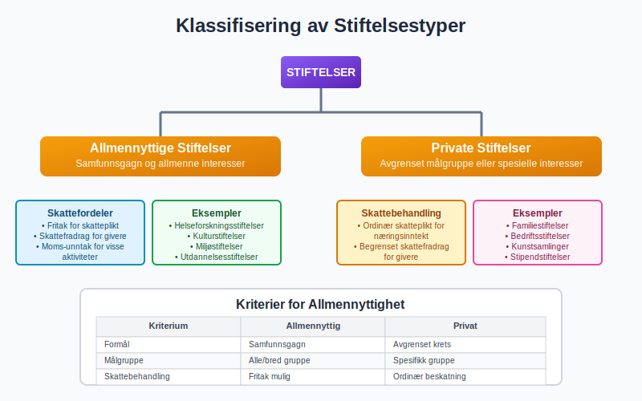
Seksjon 2: Regnskapsregler for Stiftelser
2.1 Regnskapslovens Anvendelse
Stiftelser omfattes av regnskapsloven med særlige tilpasninger:
Regnskapsplikt
Stiftelser med:
- Ordinær regnskapsplikt: Omsetning > NOK 5 mill eller
balansesum > NOK 20 mill
- Forenklet regnskapsplikt: Under disse terskelverdiene
- Unntaksbestemmelser: Spesielle regler for enkelte stiftelsestyper
2.2 Særlige Regnskapsprinsipper
Formålsbunden Kapital
Stiftelseskapitalen kan ikke fritt disponeres:
- Grunnkapital: Det opprinnelige stiftelseskapitalet
- Formålsbundne midler: Øremerkede fond og gaver
- Frie midler: Kan brukes innenfor stiftelsens formål
Balansepresentasjon
| Egenkapitalpost | Beskrivelse | Disponibilitet |
|---|---|---|
| Grunnkapital | Opprinnelig stiftelseskapital | Bundet |
| Annen bunden egenkapital | Øremerkede midler | Formålsbundet |
| Fri egenkapital | Opptjente midler | Formålsinnenfor |
2.3 Regnskapsføring av Donasjoner og Gaver
Donasjoner behandles forskjellig avhengig av karakter:
Regnskapsføring ved Mottak
Ubetinget donasjon:
Debet: Bank/Kontanter NOK 500.000
Kredit: Donasjonsinntekt NOK 500.000
Betinget donasjon:
Debet: Bank/Kontanter NOK 500.000
Kredit: Utsatt inntekt NOK 500.000
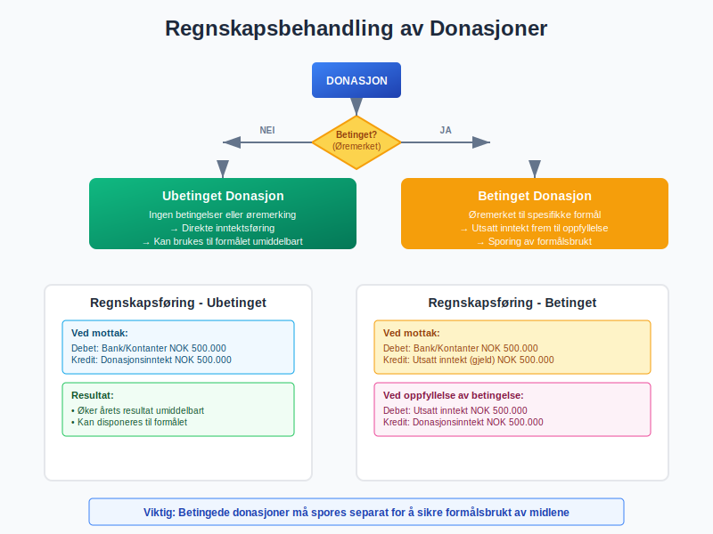
Seksjon 3: Økonomisk Styring og Rapportering
3.1 Budsjett og Økonomisk Planlegging
Stiftelser må ha systematisk budsjett-ering og økonomisk planlegging:
Budsjettkomponenter
- Driftsinntekter: Donasjoner, tilskudd, avkastning
- Driftskostnader: Administrasjon, formålsretta aktiviteter
- Investeringsbudsjett: Anleggsinvesteringer og finansinvesteringer
3.2 Performance Measurement
Nøkkeltall for Stiftelser
| Indikator | Formel | Tolkning |
|---|---|---|
| Administrasjonsgrad | Administrasjonskostnader / Totale kostnader | Kostnadseffektivitet |
| Formålsandel | Formålskostnader / Totale kostnader | Måloppnåelse |
| Soliditet | Egenkapital / Sum eiendeler | Finansiell stabilitet |
3.3 Rapporteringsstandard
Stiftelser må ofte rapportere til ulike interessenter:
Interne Rapporter
- Styreportrapper: Månedlig/kvartalsvis økonomisk status
- Formålsrapporter: Oppfølging av målsettinger
- Risikostyring: Identifisering og håndtering av risikoer
Eksterne Rapporter
- Årsrapport: Lovpålagt for større stiftelser
- Tilskuddsrapporter: Til offentlige tilskuddsgivere
- Donorrapporter: Til private givere
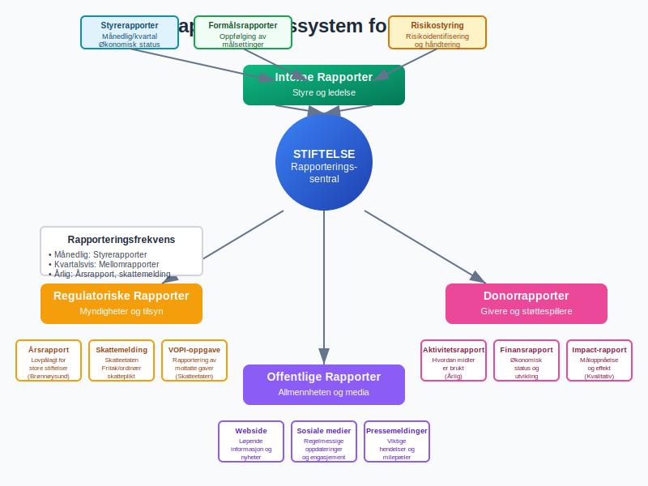
Seksjon 4: Kapitalforvaltning og Investeringer
4.1 Investeringsstrategi
Stiftelser må forvalte kapital i tråd med sitt formål:
Investeringsprinsipper
- Risikospredning: Diversifisert portefølje for å redusere risiko
- Likviditetsstyring: Balanse mellom avkastning og likviditet
- Formålstilpasning: Investeringer må være forenlige med stiftelsens verdier
Tillatte Investeringsformer
| Investeringstype | Risiko | Regulering | Regnskapsbehandling |
|---|---|---|---|
| Bankinnskudd | Lav | Innskuddsgaranti | Finansielle eiendeler |
| Statsobligasjoner | Lav-middels | Regulerte markeder | Virkelig verdi eller kost |
| Aksjeinvesteringer | Middels-høy | Markedsregulering | Markedsverdi |
| Eiendom | Middels | Særskilte regler | Anleggsmidler |
4.2 Regnskapsføring av Investeringer
Finansielle Investeringer
Kjøp av aksjer:
Debet: Aksjer og andeler NOK 1.000.000
Kredit: Bank NOK 1.000.000
Verdiendring (oppgang):
Debet: Aksjer og andeler NOK 100.000
Kredit: Gevinst finansielle poster NOK 100.000
4.3 Avkastning og Reinvestering
Avkastningsstrategier må balansere nåværende og fremtidige behov:
Utdelingsregler
- Maksimal utdeling: Vanligvis 4-5% av gjennomsnittlig kapital
- Kapitalvern: Sikre realverdien av grunnkapitalen
- Formålsfinansiering: Finansiere stiftelsens aktiviteter
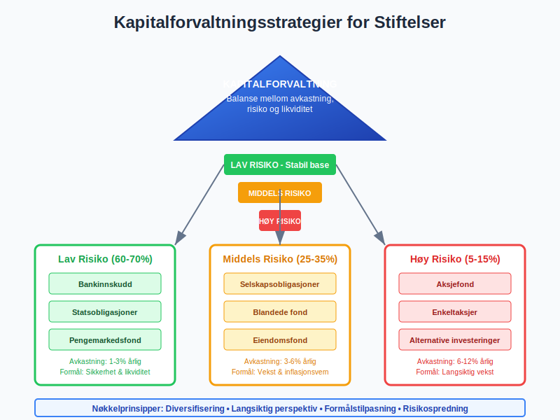
Seksjon 5: Skattemessige Forhold
5.1 Skatteplikt for Stiftelser
Skattemessig behandling avhenger av stiftelsens status og aktiviteter:
Allmennyttige Stiftelser
- Skattefritak: For allmennyttig virksomhet
- Vilkår: Må oppfylle spesifikke kriterier
- Dokumentasjon: Krav til rapportering og etterlevelse
Næringsdrivende Stiftelser
- Ordinær skatteplikt: 22% selskapsskatt
- Fradragsrett: For kostnader knyttet til næring
- Moms-registrering: Ved omsetning over terskelverdier
5.2 Skattefradrag for Givere
Donorer kan få skattefradrag for gaver:
Betingelser for Fradrag
- Godkjente mottakere: Stiftelser med skattefritaksstatus
- Minimumsbeløp: NOK 500 per gave
- Maksimumsbeløp: Begrenset til en andel av inntekten
- Dokumentasjon: Kvittering og spesifikk rapportering
5.3 Rapportering til Skattemyndighetene
Årlige Rapporter
- Skattemelding: For skattepliktige stiftelser
- Oppgave til VOPI: Rapportering av mottatte gaver
- Særoppgaver: Spesielle rapporteringskrav
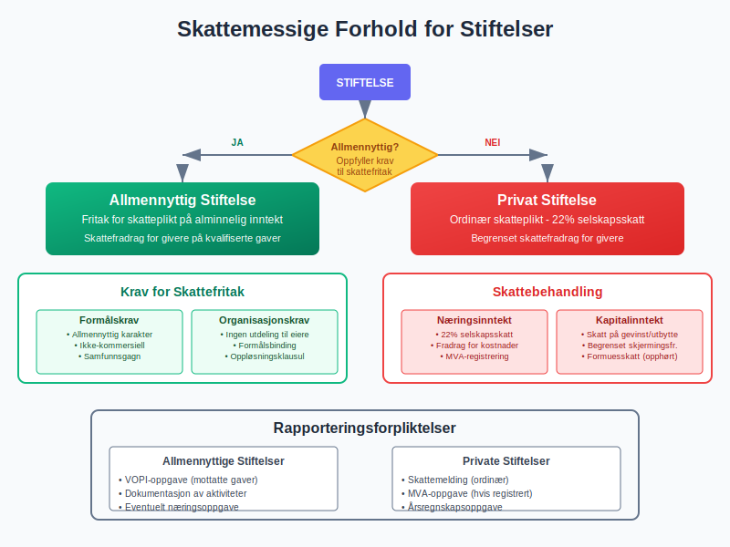
Seksjon 6: Styring og Kontroll
6.1 Stiftelsesstyring
Effective governance er kritisk for stiftelsers legitimitet:
Styrets Ansvar
- Strategisk ledelse: Langsiktig planlegging og målsetting
- Økonomisk kontroll: Overvåking av økonomisk utvikling
- Compliance: Sikre etterlevelse av lover og vedtekter
- Rapportering: Ansvar for årsrapport og regnskaper
Styresammensetning
| Rolle | Ansvar | Kompetansekrav |
|---|---|---|
| Styreleder | Overordnet ansvar og koordinering | Ledelseserfaring |
| Økonomiansvarlig | Økonomisk oppfølging | Regnskaps-/økonomikompetanse |
| Fagrepresentant | Formålsrelatert ekspertise | Relevant fagbakgrunn |
6.2 Internkontroll og Risikostyring
Internkontroll sikrer effektiv drift og rapportering:
Kontrollområder
- Finansiell rapportering: Sikre korrekt regnskapsføring
- Formålsbrukt: Kontroll med at midler brukes i tråd med vedtektene
- Interessekonflikter: Håndtering av potensielle konflikter
- Datavarestyringsansvar: Beskyttelse av sensitive data
6.3 Revisjonsordninger
Revisjonsplikt
Store stiftelser er omfattet av revisjonsplikt:
- Terskelverdier: Balancesum > NOK 20 mill eller inntekt > NOK 5 mill
- Revisortyper: Statsautorisert eller registrert revisor
- Revisjonsstandard: ISA (International Standards on Auditing)
Interne Revisjonsytelser
- Prosessrevisjon: Vurdering av internkontrollsystemer
- Compliancegjennomgang: Sikre etterlevelse av regelwerk
- Formålsrevisjon: Evaluering av måloppnåelse
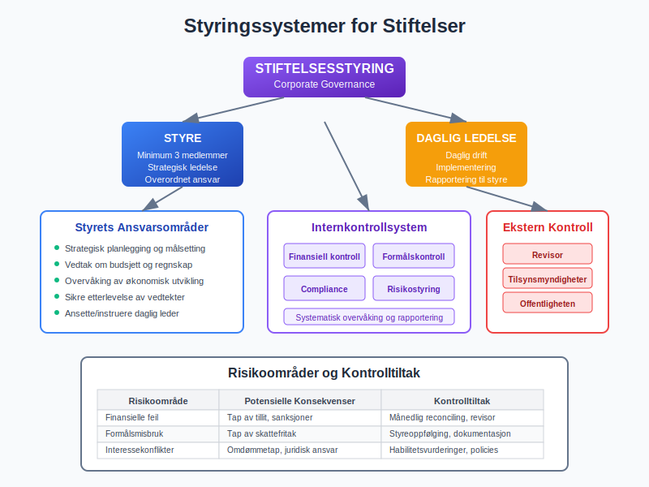
Seksjon 7: Etablering og Opprettelse
7.1 Opprettelsesprosess
Etablering av stiftelse følger en systematisk prosess:
Forberedende Fase
- Formålsdefinisjon: Klar beskrivelse av stiftelsens formål
- Vedtektsutkast: Utarbeiding av grunnleggende regelverk
- Kapitalinnsamling: Sikre minimum NOK 100.000 i grunnkapital
- Styrerekruttering: Identifisering og rekruttering av styremedlemmer
Juridisk Etablering
- Stifterdokument: Formell erklæring fra stifterne
- Vedtekter: Detaljerte regler for drift og styring
- Registrering: Innmelding til Brønnøysundregistrene
- Skatteregistrering: Søknad om skattefritaksstatus
7.2 Innledende Regnskapsoppsett
Første Regnskapsoppgjør
Etablering med grunnkapital:
Debet: Bank NOK 100.000
Kredit: Grunnkapital NOK 100.000
Opprettelseskostnader:
Debet: Opprettelseskostnader NOK 25.000
Kredit: Bank NOK 25.000
7.3 Operasjonell Oppstart
Etablering av Systemer
- Regnskapsystem: Implementering av passende regnskapssystem
- Bankforbindelser: Opprettelse av stiftelseskonto
- Forsikringer: Ansvar og operative forsikringer
- Rapporteringsrutiner: Etablering av rutiner for økonomisk rapportering
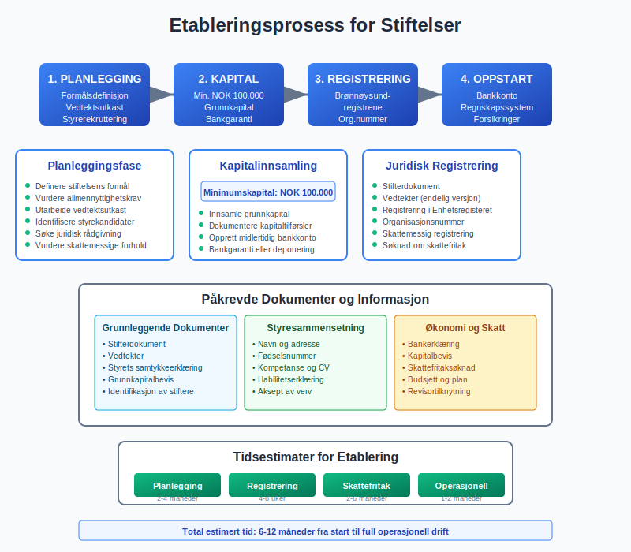
Seksjon 8: Praktisk Regnskapsføring
8.1 Daglig Regnskapsføring
Løpende regnskapsføring følger standard regnskapsprinsipper:
Typiske Transaksjoner
Mottak donasjon:
Debet: Bank NOK 50.000
Kredit: Donasjonsinntekt NOK 50.000
Utbetaling tilskudd:
Debet: Tilskudd utbetalt NOK 30.000
Kredit: Bank NOK 30.000
Administrasjonskostnader:
Debet: Kontorrekvisita NOK 5.000
Kredit: Leverandørgjeld NOK 5.000
8.2 Periodisk Rapportering
Månedlige Rutiner
- Avstemminger: Bank- og kontoavstemminger
- Fakturering: Utsendelse av fakturaer for tjenester
- Oppfølging: Kundefordringer og leverandørgjeld
Kvartalsvise Aktiviteter
- Mellomrapporter: Utarbeiding av kvartalsrapporter
- Budsjettoppfølging: Sammenligning med budsjett
- Investeringsvurdering: Gjennomgang av investeringsportefølje
8.3 Årsavslutningsprosess
Regnskapsmessige Justeringer
- Avskrivninger: Beregning og bokføring av årlige avskrivninger
- Avsetninger: Vurdering av fremtidige forpliktelser
- Verdiendringer: Markedsverdiendringer på investeringer
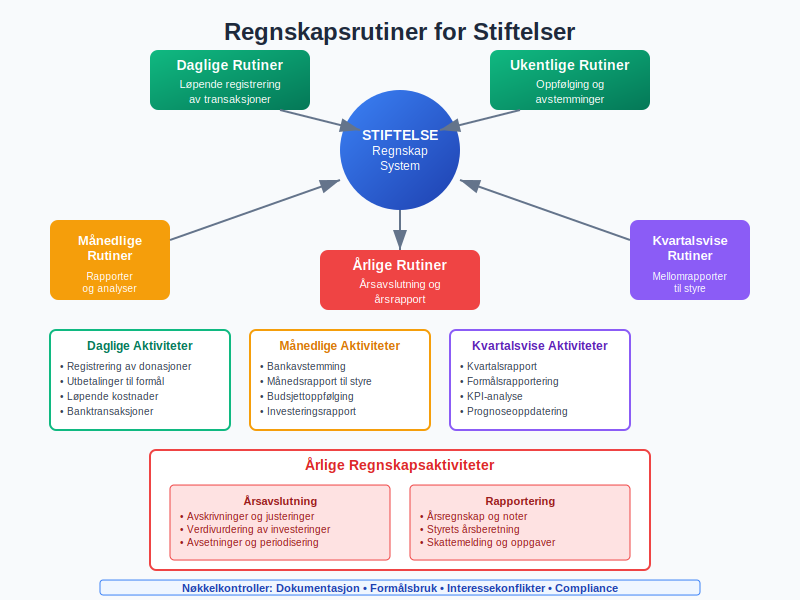
Seksjon 9: Utfordringer og Risikoområder
9.1 Typiske Utfordringer
Finansielle Utfordringer
- Finansieringsusikkerhet: Avhengighet av donasjoner og tilskudd
- Langstiktig bærekraft: Sikre finansiering av fremtidige aktiviteter
- Kostnadseffektivitet: Balanse mellom administrasjon og formålsaktiviteter
Operative Utfordringer
| Utfordring | Beskrivelse | Risikobegrensende tiltak |
|---|---|---|
| Kompetansemangel | Begrenset fagkompetanse | Styrekompetanse og ekstern rådgivning |
| Regeltolkning | Komplekse regelverk | Juridisk og regnskapsmessig rådgivning |
| Målkonflikt | Motstridende interesser | Klare prioriteringsregler |
9.2 Compliance-risiko
Regulatoriske Risikoer
- Tap av skattefritak: Ved brudd på allmennyttighetskrav
- Sanksjoner: Fra tilsynsmyndigheter
- Omdømmerisiko: Negative medieoppslag og tillitssvikt
9.3 Operasjonelle Risikoer
Finansielle Risikoer
- Markedsrisiko: Svingninger i investeringsporteføljen
- Kredittrisiko: Mislighold fra debatorer
- Likviditetsrisiko: Utilstrekkelig kontantbeholdning
Organisasjonelle Risikoer
- Nøkkelpersonrisiko: Avhengighet av enkeltsper personer
- Interessekonfliktrisiko: Manglende håndtering av interessekonflikter
- Informasjonssikkerhetsrisiko: Datatap og personvernbrudd
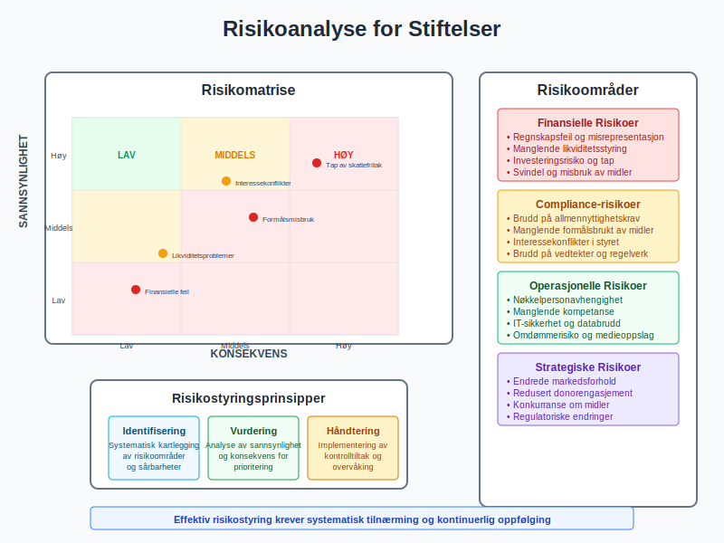
Seksjon 10: Digitalisering og Modernisering
10.1 Digitale Regnskapsløsninger
Moderne stiftelser drar nytte av digitale verktøy:
Skybaserte Systemer
- Tilgjengelighet: Flerstedsregnskap og hjemmekontor
- Automatisering: Automatisk bilagshåndtering og fakturering
- Integrasjon: Kobling til banksystemer og andre tjenester
Rapporteringsverktøy
- Sanntidsrapporter: Løpende økonomisk status
- Dashboard: Visuell presentasjon av nøkkeltall
- Automatisert distribusjon: Automatisk utsendelse av rapporter
10.2 Digitale Donasjonsplattformer
Online Fundraising
- Betalingsløsninger: Integrasjon med betalingstjenester
- Donorsporing: CRM-systemer for donorstyring
- Rapportering: Automatisk generering av kvitteringer og rapporter
10.3 Fremtidens Stiftelsesteknologi
Emerging Technologies
- Kunstig intelligens: Automatisert regnskapsføring og analyse
- Blockchain: Transparente og sporbare transaksjoner
- ESG-rapportering: Systematisk rapportering på bærekraftsmål
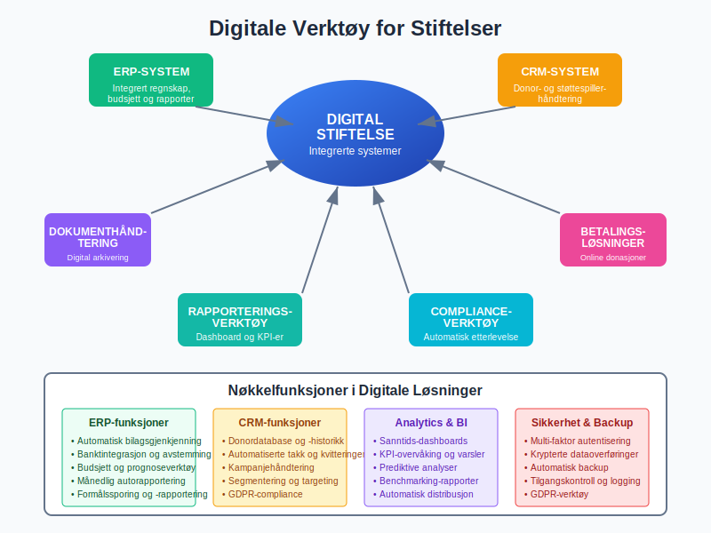
Seksjon 11: Internasjonale Aspekter
11.1 Grenseoverskridende Virksomhet
Norske stiftelser med internasjonal virksomhet møter komplekse regelverk:
Skattemessige Konsekvenser
- Dobbeltbeskatningsavtaler: Unngå dobbel skattelegging
- Kildeskatt: Behandling av utenlandske inntekter
- Transferpricing: Prissetting av interne transaksjoner
11.2 Internasjonale Regnskapsstandarder
IFRS for Non-Profit Organizations
- Anvendelse: Frivillig implementering av internasjonale standarder
- Sammenlignbarhet: Bedre sammenligning med utenlandske organisasjoner
- Rapportering: Forbedret rapportering til internasjonale givere
11.3 Regulatorisk Kompleksitet
Multi-jurisdictional Compliance
- Lokale krav: Forskjellige krav i ulike land
- Rapporteringsforpliktelser: Multiple rapporteringsregimer
- Faglig rådgivning: Behov for spesialisert ekspertise
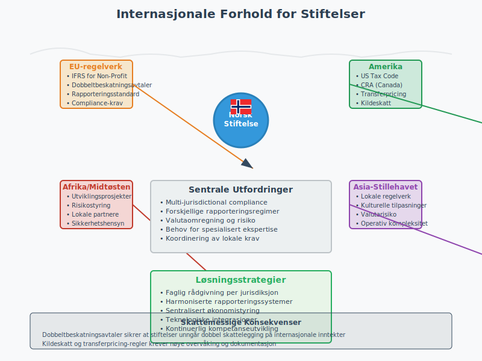
Seksjon 12: Best Practices og Anbefalinger
12.1 Styringsbaserte Anbefalinger
Effektiv Stiftelsesledelse
- Kompetent styre: Rekrutter medlemmer med relevant kompetanse
- Regelmessige møter: Systematisk styrearbeid og oppfølging
- Strategisk fokus: Langsiktig planlegging og målsetting
- Risikobevissthet: Proaktiv risikoidentifisering og -håndtering
Transparens og Akutabilitet
| Område | Anbefaling | Implementering |
|---|---|---|
| Rapportering | Utfyllende og forståelig | Årlige rapporter og kvartalsoppdateringer |
| Kommunikasjon | Åpen dialog med interessenter | Webside og sosiale medier |
| Dokumentasjon | Systematisk dokumentasjon | Digitale arkivsystemer |
12.2 Finansielle Best Practices
Robust Økonomiforvaltning
- Konservativ budsjetteing: Realistiske inntekts- og kostnadsanslag
- Likviditetsreserver: Tilstrekkelig kontantbeholdning
- Diversifiserte inntektskilder: Reduser avhengighet av enkeltdonorer
- Kostnadseffektivitet: Kontinuerlig fokus på kostnads-nytte
Investeringsstrategi
- Langsiktig perspektiv: Investeringer tilpasset stiftelsens levetid
- Risikobalanse: Tilpasset risikonivå og formål
- Professional forvaltning: Faglig investeringsrådgivning
- Regular gjennomgang: Periodisk evaluering av investeringsstrategi
12.3 Teknologi og Innovasjon
Digital Transformation
- Stegvis implementering: Systematisk digitalisering
- Ansattopplæring: Kompetanseutvikling på nye systemer
- Cybersikkerhet: Beskyttelse av sensitive data
- Kontinuerlig utvikling: Følg med på teknologiske endringer
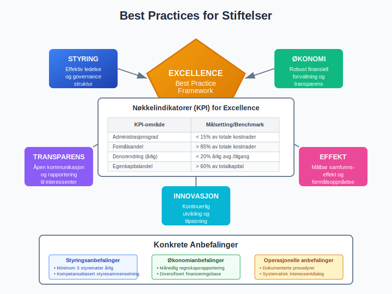
Konklusjon
Stiftelser representerer en unik og viktig organisasjonsform som krever spesialisert kunnskap innen regnskap, skatt og styring. Den formålsbundne karakteren stiller særlige krav til hvordan egenkapital forvaltes, hvordan inntekter håndteres og hvordan finansielle eiendeler investeres.
Nøkkelinnsikter for suksessfull stiftelsesdrift:
- Regelverkskompleksitet: Stiftelser navigerer i et komplekst regulatorisk landskap som krever kontinuerlig oppmerksomhet
- Finansiell ansvarlighet: Forvaltning av giveres midler krever høyeste grad av transparens og etisk håndtering
- Långsiktig perspektiv: Stiftelser må balansere dagens behov med fremtidens muligheter
- Professional forvaltning: Krav til høy kompetanse innen økonomi, regnskap og juss
Strategiske suksessfaktorer:
Effektiv stiftelsesdrift bygger på sterke systemer for internkontroll, systematisk risikostyring og kontinuerlig fokus på formålsoppnåelse. Kombinasjon av traditionell regnskapskunnskap med moderne teknologi og digitale verktøy gir stiftelser mulighet til å operere både effektivt og transparent.
Fremtidsrettet forvaltning:
Moderne stiftelser må tilpasse seg et stadig mer complex samfunn med økte krav til bærekraftsrapportering, digital kompetanse og cross-border compliance. Ved å etablere robuste governance-strukturer, implementere moderne teknologiske løsninger og maintainaine høy kompetanse, kan stiftelser sikre langsiktig success og måloppnåelse.
Praktisk implementering:
For de som etablerer eller driver stiftelser, er det avgjørende å investere i professional regnskapsføring, systematiske rapporteringsrutiner og kontinuerlig kompetanseutvikling. Stiftelser som prioriterer transparens, professional forvaltning og fokus på formålsoppnåelse, vil være best posisjonert for å skape varig samfunnsverdi og opprettholde tillit hos givere og beneficiaries.
Stiftelser er fundamentale byggeklosser i det sivile samfunn, og deres finansielle integritet og operasjonelle excellence er avgjørende for å opprettholde tilliten som er basis for deres eksistens og virkefelt.